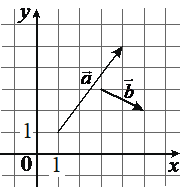

Впишите правильный ответ.
На координатной плоскости изображены векторы a → и b → , координатами которых являются целые числа. Найдите длину вектора a → +4 b → .

КЭС: 7.5 Координаты и векторы
Тип ответа: Краткий ответ
Источник ФИПИ